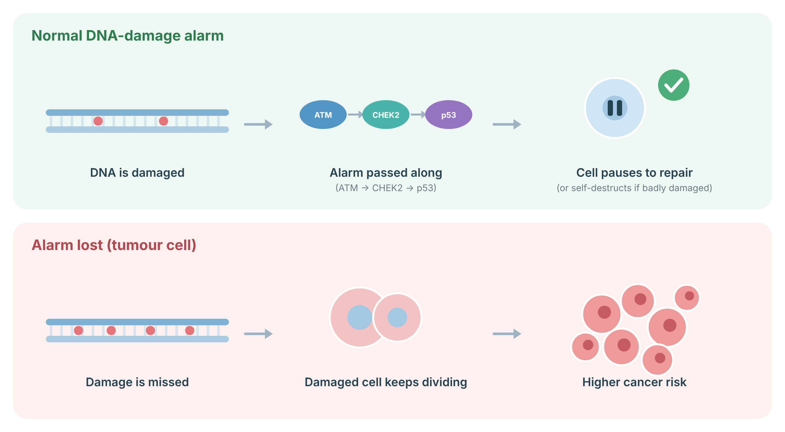
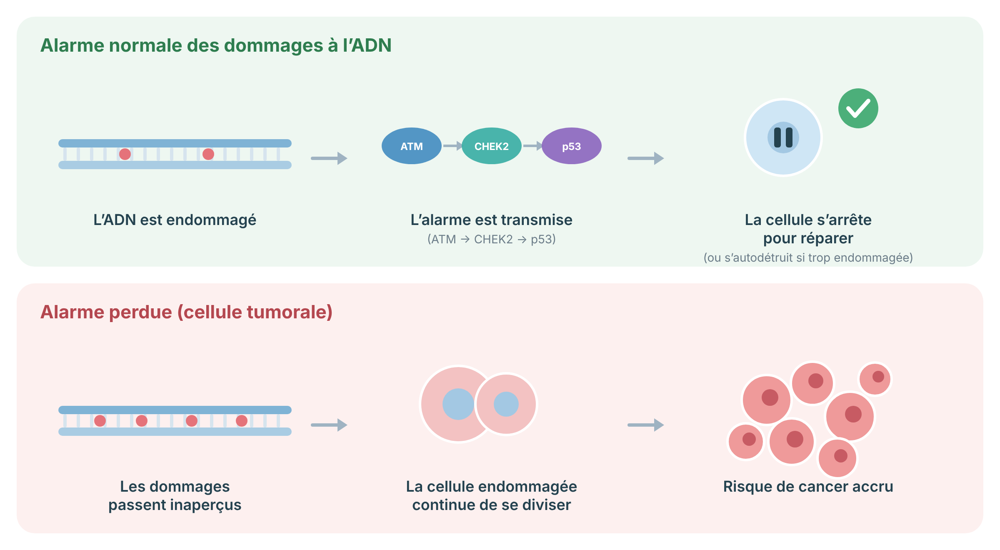

Cancer Prevention & Surveillance Protocol
A prevention and surveillance protocol for people who carry a pathogenic CHEK2 variant, and for the clinicians who care for them. CHEK2 is a moderate-risk gene. Your personal plan depends heavily on your family history.
For patients
CHEK2 is a gene that helps your cells repair damaged DNA and stop cancer from forming. When one copy of this gene is not working, that repair system is a little weaker. This raises your chance of certain cancers, mainly breast cancer in women and, to a smaller degree, prostate cancer in men.
CHEK2 is a moderate-risk gene, not a high-risk one. That is an important difference. Many people who carry a CHEK2 variant never develop cancer. Your actual risk depends a lot on your family history. The more close relatives who have had breast or prostate cancer, the higher your own risk, and the more careful your screening plan should be.
The plan below is a starting point. We adjust it for you using your family history and a personal risk calculator.
CHEK2 (checkpoint kinase 2) encodes a serine/threonine kinase activated by ATM in response to DNA double-strand breaks. Once activated, CHEK2 phosphorylates downstream targets including p53, BRCA1, and CDC25, coordinating cell-cycle arrest, DNA repair, and apoptosis. Loss-of-function variants impair this checkpoint, permitting propagation of cells carrying unrepaired DNA damage.
CHEK2-related cancer predisposition is inherited in an autosomal dominant manner, but penetrance is intermediate. A classic vertical inheritance pattern is often not seen, because many carriers remain unaffected. Cancer risk behaves as a continuous variable that is strongly modified by family history, polygenic background, breast density, hormonal and reproductive factors, and the specific variant. The dominant clinical association is ER-positive female breast cancer. There is a more modest association with prostate cancer, particularly for protein-truncating variants. Associations with other sites are weaker, conflicting, or have been revised downward.
Not all CHEK2 variants confer the same risk. The most-studied variant is the protein-truncating c.1100delC. Three variants historically reported as pathogenic — c.470T>C (p.Ile157Thr), c.1283C>T (p.Ser428Phe), and c.1427C>T (p.Thr476Met) — are now regarded as lower-penetrance and, in isolation, are not associated with clinically actionable risk on their own. ENIGMA reporting guidance suggests only variants conferring a twofold or greater risk be clinically reported. Distinguishing higher-penetrance (truncating) from lower-penetrance variants is the first step in building a surveillance plan.
When DNA is damaged, cells raise an alarm. ATM senses the damage and passes the signal through CHEK2 to p53, which makes the cell pause to repair or, if the damage is too great, self-destruct. When this alarm system is weakened, damaged cells can keep dividing and collect more errors, which raises cancer risk.
CHEK2: CHEK2 relays the alarm from ATM to p53.

Sources: Kastan MB, Bartek J. Cell-cycle checkpoints and cancer. Nature 2004;432:316–23 (PubMed).
For patients
The numbers below are ranges, not a fixed prediction. They show that family history changes your risk a great deal. A woman with a CHEK2 variant and no affected relatives has a much lower breast cancer risk than a woman with several affected close relatives. We use a calculator called CanRisk to turn your family tree into a personal number.
Published penetrance estimates vary widely because of differences in study design, ascertainment, and variant mix. The figures below should be read as population-level approximations. For individual counselling I use a validated risk model (CanRisk / BOADICEA) that integrates the CHEK2 result with family history, breast density, and reproductive factors.
| Cancer / setting | Approximate risk | Level | Basis |
|---|---|---|---|
| Female breast — truncating variant, range across studies | ~20–40% lifetime (≈2–3× population; up to ~33% by age 80 in population-based data) | Moderate | BCAC; Australian BCFR; meta-analyses |
| Female breast — no affected first-degree relatives | ~20% lifetime; may approach population range | Moderate | Polish founder cohort |
| Female breast — one affected first-degree relative | ~28–34% lifetime | Moderate | Polish founder cohort |
| Female breast — strong family history (multiple relatives) | up to ~44% lifetime | High | Polish founder cohort |
| Female breast — biallelic / homozygous carriers | Substantially higher than monoallelic; earlier onset; more multiple primaries | High | Rainville 2020 (Myriad cohort) |
| Female breast — low-penetrance variants (I157T, S428F, T476M) in isolation | Near-population to mildly elevated | Low / standard | Bychkovsky 2022; Hernandez 2024 |
| Prostate (truncating variants, esp. with family history) | Modestly elevated; aggressive-disease signal in some series | Moderate | NCCN; prostate meta-analysis |
| Male breast | Elevated over baseline but absolute risk low | Low / standard | Myriad clinical summary |
| Colorectal | No consistent excess in recent large data; NCCN now advises population screening absent family history | Low / standard | NCCN revision; retrospective cohort |
Evidence quality
Breast cancer risk is the best-established association and is guideline-actionable. Prostate risk is supported but management is largely shared-decision-making. The colorectal association has been revised downward and is no longer a basis for intensified screening in the absence of family history. Treat single-number lifetime estimates with caution; family-history-adjusted modelling is preferred.
For patients
Breast cancer is the main thing we watch for. For most women with a CHEK2 variant, this means a yearly mammogram starting at age 40, and often a yearly breast MRI as well. Breast MRI finds cancers earlier, especially in dense breasts. We decide together when to add MRI and when to start, based on your risk number and your family history.
If your estimated lifetime risk is high, we may start imaging earlier. If you carry one of the lower-risk variants and have no strong family history, your plan may look closer to standard screening.
For patients
Men who carry a CHEK2 variant have a somewhat higher chance of prostate cancer, mostly with the truncating variants and especially if prostate cancer runs in the family. We usually discuss starting PSA blood-test screening around age 40. This is a shared decision: PSA screening has benefits and trade-offs, and we will go through them together.
For patients
Earlier guidelines suggested CHEK2 carriers needed extra colon screening. Newer and larger data did not confirm a meaningful extra colon cancer risk for most carriers. So unless colon cancer runs in your family, you follow the same colon screening as everyone else. Other organ links to CHEK2 are weak or unproven.
For patients
For most women with a CHEK2 variant, surgery to remove the breasts to prevent cancer is not routinely recommended. Because CHEK2 is a moderate-risk gene, careful screening is usually enough. Surgery can still be a reasonable personal choice for some women with a strong family history or a very high estimated risk. This is always a shared, unhurried decision.
There are no outcome data demonstrating a survival benefit of bilateral risk-reducing mastectomy (RRM) specifically for heterozygous CHEK2 carriers. Most international guidelines, including NCCN, do not recommend routine RRM but support considering it within a personalized risk assessment and shared decision-making, weighted by family history and estimated lifetime risk. For a CHEK2 carrier already affected by breast cancer, evidence is insufficient to mandate contralateral risk-reducing mastectomy; manage based on family history and individual factors. There is no role for risk-reducing gynaecologic surgery on the basis of CHEK2 alone. There is no hormonal contraindication specific to CHEK2.
For patients
Some women at higher breast cancer risk can take a daily medication that lowers that risk. These are anti-estrogen pills. They are an option to discuss, not something everyone needs. We weigh your risk against the possible side effects together.
Endocrine chemoprevention (a selective estrogen receptor modulator such as tamoxifen, or an aromatase inhibitor such as anastrozole or exemestane in postmenopausal women) can be discussed for female CHEK2 carriers who meet a risk threshold for benefit, consistent with general moderate-to-high-risk breast cancer prevention guidance. Because CHEK2-associated breast cancer is predominantly ER-positive, endocrine prevention is biologically rational. Candidacy is driven by estimated risk (e.g. 5-year or lifetime risk thresholds), age, menopausal status, and contraindications (thromboembolic risk for SERMs; bone health for aromatase inhibitors), not by the CHEK2 result alone.
Canadian dosing context
Tamoxifen 20 mg once daily for 5 years is the usual chemopreventive regimen in premenopausal candidates. In postmenopausal candidates, an aromatase inhibitor (e.g. anastrozole 1 mg daily, or exemestane 25 mg daily) is an alternative where appropriate. Confirm current eligibility, baseline bone density for aromatase inhibitors, and thromboembolic risk for SERMs before initiation. There is no CHEK2-specific aspirin chemoprevention indication.
For patients
CHEK2 is passed down in families. Each of your children, brothers, sisters, and parents has a 1 in 2 chance of carrying the same variant. We can test your adult relatives so that those who carry it can start the right screening and those who do not can be reassured. This is called cascade testing. If you are planning a family, we can also talk through reproductive options.
CHEK2-related cancer predisposition is autosomal dominant. First-degree relatives of a heterozygous carrier have a 50% chance of carrying the familial variant. Cascade (predictive) testing of at-risk adult relatives is offered once the familial variant is identified, allowing risk-appropriate surveillance for carriers and de-escalation to population screening for non-carriers. Counselling should cover the moderate, family-history-dependent nature of the risk to avoid overestimation.
For biallelic scenarios, reproductive counselling is relevant: all offspring of a biallelic carrier inherit at least one variant, and if the partner is also a carrier, offspring may be biallelic. Reproductive options (including prenatal diagnosis and preimplantation genetic testing) can be discussed where clinically appropriate, recognizing that CHEK2 is a moderate-risk adult-onset predisposition and decisions are individual. A three-generation pedigree should anchor every assessment and is the primary input to risk modelling.
For patients
Healthy habits lower breast cancer risk for everyone, and that includes CHEK2 carriers. The biggest levers are keeping alcohol low, staying physically active, keeping a healthy weight especially after menopause, and not smoking. These do not replace screening, but they help.
General breast cancer risk-reduction measures apply and may be especially worthwhile given a moderately elevated baseline. Evidence-supported measures include limiting alcohol (risk rises with intake), maintaining regular physical activity, avoiding excess weight gain and post-menopausal obesity, and not smoking. Where relevant, discuss the modest risk associated with combined menopausal hormone therapy in the context of an already elevated baseline. These measures are adjuncts to, not substitutes for, imaging surveillance.
For patients
Research is improving how we estimate your personal risk and how early we can catch cancer. Some of these tools are promising but not yet standard care. We will tell you clearly when something is established versus still being studied.
Investigational — not standard of care
Polygenic risk scores (PRS). Combining a CHEK2 result with a breast cancer PRS can refine individual risk and may move a carrier across a screening threshold. Integration into models such as CanRisk is advancing but clinical implementation is still maturing.
MRI start-age optimization. Modelling suggests beginning breast MRI at 30–35 may substantially reduce mortality in CHEK2 heterozygotes, but the optimal start age is not settled across jurisdictions and remains an area of active study.
Whole-body MRI and multi-cancer early detection (MCED) blood tests. These are under investigation for hereditary-risk populations. They are not validated for routine CHEK2 surveillance and should be framed as research or self-directed, not guideline-endorsed.
Protocole de prévention et de surveillance du cancer
Un protocole de prévention et de surveillance pour les personnes porteuses d'un variant pathogène de CHEK2, et pour les cliniciens qui les suivent. CHEK2 est un gène à risque modéré. Votre plan personnel dépend beaucoup de vos antécédents familiaux.
Pour les patients
CHEK2 est un gène qui aide vos cellules à réparer l'ADN endommagé et à empêcher le cancer de se former. Quand une copie de ce gène ne fonctionne pas, ce système de réparation est un peu plus faible. Cela augmente votre risque de certains cancers, surtout le cancer du sein chez la femme et, dans une moindre mesure, le cancer de la prostate chez l'homme.
CHEK2 est un gène à risque modéré, pas à risque élevé. C'est une différence importante. Beaucoup de personnes porteuses d'un variant CHEK2 ne développent jamais de cancer. Votre risque réel dépend beaucoup de vos antécédents familiaux. Plus vous avez de proches parents ayant eu un cancer du sein ou de la prostate, plus votre propre risque est élevé, et plus votre plan de dépistage doit être attentif.
Le plan ci-dessous est un point de départ. Nous l'adaptons à vous avec vos antécédents familiaux et un calculateur de risque personnel.
CHEK2 (checkpoint kinase 2) code une sérine/thréonine kinase activée par ATM en réponse aux cassures double brin de l'ADN. Une fois activée, CHEK2 phosphoryle des cibles en aval, dont p53, BRCA1 et CDC25, coordonnant l'arrêt du cycle cellulaire, la réparation de l'ADN et l'apoptose. Les variants avec perte de fonction altèrent ce point de contrôle, permettant la propagation de cellules porteuses de dommages à l'ADN non réparés.
La prédisposition au cancer liée à CHEK2 se transmet de façon autosomique dominante, mais la pénétrance est intermédiaire. Un schéma vertical classique n'est souvent pas observé, car de nombreux porteurs restent indemnes. Le risque de cancer se comporte comme une variable continue fortement modifiée par les antécédents familiaux, le fond polygénique, la densité mammaire, les facteurs hormonaux et reproductifs, ainsi que le variant précis. L'association clinique dominante est le cancer du sein ER-positif chez la femme. L'association avec le cancer de la prostate est plus modeste, surtout pour les variants tronquants. Les associations avec d'autres sites sont plus faibles, contradictoires, ou ont été revues à la baisse.
Tous les variants de CHEK2 ne confèrent pas le même risque. Le variant le plus étudié est le variant tronquant c.1100delC. Trois variants historiquement rapportés comme pathogènes — c.470T>C (p.Ile157Thr), c.1283C>T (p.Ser428Phe) et c.1427C>T (p.Thr476Met) — sont maintenant considérés comme de plus faible pénétrance et, isolément, ne sont pas associés à un risque cliniquement exploitable à eux seuls. Les recommandations de déclaration ENIGMA suggèrent de ne rapporter cliniquement que les variants conférant un risque d'au moins le double. Distinguer les variants de plus forte pénétrance (tronquants) de ceux de plus faible pénétrance est la première étape pour bâtir un plan de surveillance.
Quand l’ADN est endommagé, la cellule déclenche une alarme. ATM détecte les dommages et transmet le signal à p53 par l’intermédiaire de CHEK2; p53 fait alors s’arrêter la cellule pour réparer ou, si les dommages sont trop importants, la fait s’autodétruire. Quand ce système d’alarme est affaibli, les cellules endommagées peuvent continuer à se diviser et accumuler d’autres erreurs, ce qui augmente le risque de cancer.
CHEK2: CHEK2 relaie l’alarme d’ATM vers p53.

Sources : Kastan MB, Bartek J. Cell-cycle checkpoints and cancer. Nature 2004;432:316–23 (PubMed).
Pour les patients
Les chiffres ci-dessous sont des fourchettes, pas une prédiction fixe. Ils montrent que les antécédents familiaux changent beaucoup votre risque. Une femme porteuse d'un variant CHEK2 sans parent atteint a un risque de cancer du sein bien plus faible qu'une femme avec plusieurs proches atteints. Nous utilisons un calculateur appelé CanRisk pour traduire votre arbre familial en un chiffre personnel.
Les estimations de pénétrance publiées varient largement en raison des différences de conception d'étude, de mode de recrutement et de mélange de variants. Les chiffres ci-dessous doivent être lus comme des approximations à l'échelle populationnelle. Pour le conseil individuel, j'utilise un modèle de risque validé (CanRisk / BOADICEA) qui intègre le résultat CHEK2 aux antécédents familiaux, à la densité mammaire et aux facteurs reproductifs.
| Cancer / contexte | Risque approximatif | Niveau | Base |
|---|---|---|---|
| Sein (femme) — variant tronquant, fourchette des études | ~20–40 % à vie (≈2–3× la population ; jusqu'à ~33 % à 80 ans dans les données populationnelles) | Modéré | BCAC ; BCFR australien ; méta-analyses |
| Sein (femme) — aucun parent du 1er degré atteint | ~20 % à vie ; peut approcher la fourchette populationnelle | Modéré | Cohorte fondatrice polonaise |
| Sein (femme) — un parent du 1er degré atteint | ~28–34 % à vie | Modéré | Cohorte fondatrice polonaise |
| Sein (femme) — antécédents familiaux marqués (plusieurs parents) | jusqu'à ~44 % à vie | Élevé | Cohorte fondatrice polonaise |
| Sein (femme) — porteuses bialléliques / homozygotes | Nettement plus élevé que monoallélique ; survenue plus précoce ; plus de tumeurs primitives multiples | Élevé | Rainville 2020 (cohorte Myriad) |
| Sein (femme) — variants de faible pénétrance (I157T, S428F, T476M) isolés | Proche de la population à légèrement élevé | Faible / standard | Bychkovsky 2022 ; Hernandez 2024 |
| Prostate (variants tronquants, surtout avec antécédents familiaux) | Modérément élevé ; signal de maladie agressive dans certaines séries | Modéré | NCCN ; méta-analyse prostate |
| Sein (homme) | Plus élevé que la base mais risque absolu faible | Faible / standard | Résumé clinique Myriad |
| Côlon-rectum | Pas d'excès constant dans les données récentes ; NCCN recommande le dépistage populationnel en l'absence d'antécédents familiaux | Faible / standard | Révision NCCN ; cohorte rétrospective |
Qualité de la preuve
Le risque de cancer du sein est l'association la mieux établie et exploitable selon les guides. Le risque prostatique est soutenu mais la prise en charge relève surtout d'une décision partagée. L'association colorectale a été revue à la baisse et ne justifie plus un dépistage intensifié en l'absence d'antécédents familiaux. Interprétez avec prudence les estimations à vie sous forme d'un chiffre unique ; la modélisation ajustée aux antécédents familiaux est préférable.
Pour les patients
Le cancer du sein est ce que nous surveillons en priorité. Pour la plupart des femmes porteuses d'un variant CHEK2, cela signifie une mammographie annuelle dès 40 ans, et souvent une IRM mammaire annuelle aussi. L'IRM mammaire détecte les cancers plus tôt, surtout dans les seins denses. Nous décidons ensemble quand ajouter l'IRM et quand commencer, selon votre chiffre de risque et vos antécédents familiaux.
Si votre risque à vie estimé est élevé, nous pouvons commencer l'imagerie plus tôt. Si vous portez l'un des variants à plus faible risque sans antécédents familiaux marqués, votre plan peut ressembler davantage au dépistage standard.
Pour les patients
Les hommes porteurs d'un variant CHEK2 ont un risque un peu plus élevé de cancer de la prostate, surtout avec les variants tronquants et surtout si ce cancer est présent dans la famille. Nous discutons habituellement de commencer le dépistage par dosage de l'APS (PSA) vers 40 ans. C'est une décision partagée : le dépistage par APS a des avantages et des compromis, que nous reverrons ensemble.
Pour les patients
D'anciennes recommandations suggéraient que les porteurs de CHEK2 avaient besoin d'un dépistage du côlon supplémentaire. Des données plus récentes et plus larges n'ont pas confirmé de risque significatif supplémentaire de cancer du côlon pour la plupart des porteurs. Donc, sauf si le cancer du côlon est présent dans votre famille, vous suivez le même dépistage du côlon que tout le monde. Les liens entre CHEK2 et d'autres organes sont faibles ou non prouvés.
Pour les patients
Pour la plupart des femmes porteuses d'un variant CHEK2, une chirurgie pour retirer les seins afin de prévenir le cancer n'est pas recommandée de routine. Comme CHEK2 est un gène à risque modéré, une surveillance attentive suffit généralement. La chirurgie peut tout de même être un choix personnel raisonnable pour certaines femmes ayant des antécédents familiaux marqués ou un risque estimé très élevé. C'est toujours une décision partagée, prise sans précipitation.
Il n'existe pas de données de résultats démontrant un bénéfice de survie de la mastectomie bilatérale de réduction du risque (MRR) spécifiquement pour les porteuses hétérozygotes de CHEK2. La plupart des guides internationaux, dont NCCN, ne recommandent pas la MRR de routine mais soutiennent de l'envisager dans le cadre d'une évaluation personnalisée du risque et d'une décision partagée, pondérée par les antécédents familiaux et le risque à vie estimé. Pour une porteuse de CHEK2 déjà atteinte d'un cancer du sein, la preuve est insuffisante pour imposer une mastectomie controlatérale de réduction du risque ; gérer selon les antécédents familiaux et les facteurs individuels. Il n'y a pas d'indication de chirurgie gynécologique de réduction du risque sur la seule base de CHEK2. Il n'y a pas de contre-indication hormonale spécifique à CHEK2.
Pour les patients
Certaines femmes à risque plus élevé de cancer du sein peuvent prendre un médicament quotidien qui réduit ce risque. Ce sont des comprimés anti-œstrogènes. C'est une option à discuter, pas une nécessité pour tout le monde. Nous pesons ensemble votre risque face aux effets secondaires possibles.
La chimioprévention endocrine (un modulateur sélectif des récepteurs des œstrogènes comme le tamoxifène, ou un inhibiteur de l'aromatase comme l'anastrozole ou l'exémestane chez les femmes ménopausées) peut être discutée pour les porteuses de CHEK2 qui atteignent un seuil de risque justifiant un bénéfice, conformément aux recommandations générales de prévention du cancer du sein à risque modéré à élevé. Comme le cancer du sein associé à CHEK2 est majoritairement ER-positif, la prévention endocrine est biologiquement rationnelle. L'admissibilité est déterminée par le risque estimé (p. ex. seuils de risque à 5 ans ou à vie), l'âge, le statut ménopausique et les contre-indications (risque thromboembolique pour les SERM ; santé osseuse pour les inhibiteurs de l'aromatase), et non par le seul résultat CHEK2.
Contexte posologique canadien
Le tamoxifène 20 mg une fois par jour pendant 5 ans est le schéma chimiopréventif habituel chez les candidates préménopausées. Chez les candidates ménopausées, un inhibiteur de l'aromatase (p. ex. anastrozole 1 mg par jour, ou exémestane 25 mg par jour) est une option lorsque cela convient. Confirmer l'admissibilité actuelle, la densité osseuse de référence pour les inhibiteurs de l'aromatase, et le risque thromboembolique pour les SERM avant l'instauration. Il n'y a pas d'indication de chimioprévention par l'aspirine spécifique à CHEK2.
Pour les patients
CHEK2 se transmet dans les familles. Chacun de vos enfants, frères, sœurs et parents a 1 chance sur 2 de porter le même variant. Nous pouvons tester vos proches adultes pour que ceux qui le portent commencent le bon dépistage et que ceux qui ne le portent pas soient rassurés. C'est ce qu'on appelle le test en cascade. Si vous planifiez une famille, nous pouvons aussi discuter des options reproductives.
La prédisposition au cancer liée à CHEK2 est autosomique dominante. Les parents du premier degré d'une porteuse hétérozygote ont 50 % de chances de porter le variant familial. Le test en cascade (prédictif) des proches adultes à risque est offert une fois le variant familial identifié, permettant une surveillance adaptée au risque pour les porteurs et un retour au dépistage populationnel pour les non-porteurs. Le conseil doit souligner le caractère modéré et dépendant des antécédents familiaux du risque, afin d'éviter une surestimation.
Pour les situations bialléliques, le conseil reproductif est pertinent : tous les enfants d'un porteur biallélique héritent d'au moins un variant, et si le partenaire est aussi porteur, les enfants peuvent être bialléliques. Les options reproductives (dont le diagnostic prénatal et le test génétique préimplantatoire) peuvent être discutées lorsque cela est cliniquement approprié, en reconnaissant que CHEK2 est une prédisposition à risque modéré et à survenue adulte, et que les décisions sont individuelles. Un arbre généalogique sur trois générations doit ancrer chaque évaluation et constitue la principale donnée d'entrée de la modélisation du risque.
Pour les patients
De saines habitudes réduisent le risque de cancer du sein pour tout le monde, y compris les porteurs de CHEK2. Les leviers les plus importants sont de limiter l'alcool, de rester actif physiquement, de maintenir un poids santé surtout après la ménopause, et de ne pas fumer. Cela ne remplace pas le dépistage, mais cela aide.
Les mesures générales de réduction du risque de cancer du sein s'appliquent et peuvent être particulièrement utiles compte tenu d'un risque de base modérément élevé. Les mesures appuyées par les données incluent limiter l'alcool (le risque augmente avec la consommation), maintenir une activité physique régulière, éviter une prise de poids excessive et l'obésité postménopausique, et ne pas fumer. Le cas échéant, discuter du risque modeste associé à l'hormonothérapie ménopausique combinée dans le contexte d'un risque de base déjà élevé. Ces mesures sont des compléments, et non des substituts, à la surveillance par imagerie.
Pour les patients
La recherche améliore notre façon d'estimer votre risque personnel et la précocité avec laquelle nous pouvons détecter un cancer. Certains de ces outils sont prometteurs mais ne font pas encore partie des soins standards. Nous vous dirons clairement ce qui est établi et ce qui est encore à l'étude.
Expérimental — ne fait pas partie des soins standards
Scores de risque polygénique (PRS). Combiner un résultat CHEK2 à un PRS du cancer du sein peut affiner le risque individuel et peut faire franchir à une porteuse un seuil de dépistage. L'intégration dans des modèles comme CanRisk progresse, mais la mise en œuvre clinique est encore en cours de maturation.
Optimisation de l'âge de départ de l'IRM. La modélisation suggère que commencer l'IRM mammaire à 30–35 ans pourrait réduire substantiellement la mortalité chez les porteuses hétérozygotes de CHEK2, mais l'âge de départ optimal n'est pas arrêté d'une juridiction à l'autre et reste un domaine d'étude actif.
IRM corps entier et tests sanguins de détection précoce multicancers (MCED). Ils sont à l'étude pour les populations à risque héréditaire. Ils ne sont pas validés pour la surveillance de routine de CHEK2 et doivent être présentés comme relevant de la recherche ou d'une démarche personnelle, et non comme recommandés par les guides.